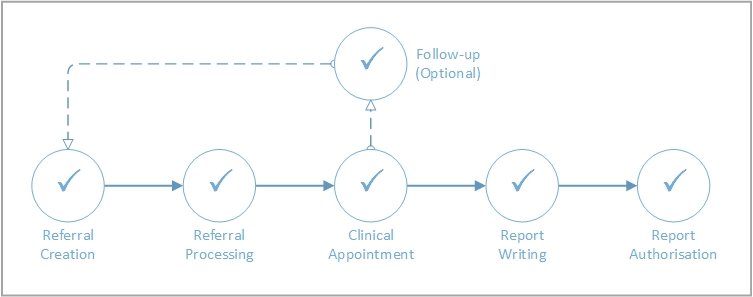

Occupational Health in Meddbase consists of a series of workflows, features and configuration, all of which should be addressed separately.
This article will outline the stages of Case Management and subsequent articles in this section will walk you through each stage in detail.
The functionality outlined in this article requires initial setup and configuration to be completed. This article outlines the stages of Case Management and subsequent articles in this section will walk you through each stage in detail.
The Case Management workflow available in Meddbase can be described as a series of encounters with an employee, initiated by a referral.
The diagram below illustrates the process.

The process can be summarised as shown in the table below.
| Process Step | Explanation |
| A referral comes into Meddbase from the referrer. This could be either sent electronically via the Referral Portal or created on behalf of the referrer by a Meddbase user. | |
| Once the referral has been received a work item is generated for a Meddbase user to process. The referral goes through stages of collaboration, acceptance/rejection, and booking. | |
| A successful referral will result in an appointment being booked. This appointment becomes the home for all clinical findings during the patient encounter. | |
| Report Writing | Completion of any appointment created from an occupational health referral results in a report being written. The report process has many optional routes but will eventually result in the report being sent to the employee and referrer (if authorised). |
| Completed reports may go through an authorisation phase whereby the employee reviews the document and either accepts or refuses the content. | |
| Assuming this is not the last planned encounter with this employee, a follow-up referral is created. This action leaves the case ‘open’ and begins the cycle again from the ‘Referral Processing’ phase. |